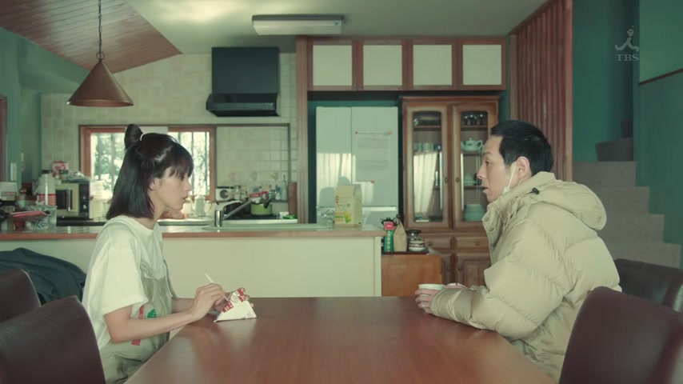

～ている (State)
| Polite | ～ています |
|---|---|
| Casual | ～ている・～てる てる: spoken, everyday |
Same meaning: a state that lasts. Only the politeness changes.

YouTube · video
今は岡崎に地元があるんですけど、今は名古屋に住んでいます。
"My hometown is Okazaki, but now I live in Nagoya."
With some verbs, ている isn't an action going on. It's a state that lasts: 住む is moving in, 住んでいる is living there now.
Same shape as "is doing": 住む → 住んで → 住んでいる. The common ones: 住んでいる (live), 持っている (have), 知っている (know), 結婚している (married), 着ている (wearing).
ています is polite. Casual is ている, and in speech the い usually drops: 住んでる.

YouTube · video
やべ、やべえ。マシンガン持ってる。
"Oh no, oh no. They've got a machine gun." [playing a video game]
持つ is the moment you pick it up. 持ってる is having it now.
Examples
A coworker asks about your family.
姉は結婚しています。
"My older sister is married."
結婚する is the wedding day. 結婚している is being married.
PoliteYour friend mentions a café.
あ、その店、知ってる！
"Oh, I know that place!"
知る is finding out. 知っている is knowing.
CasualPointing someone out at a party.
あの赤いセーターを着ている人です。
"The person in the red sweater."
着る is putting it on. 着ている is wearing it.
PoliteYour friend looks worn out.
疲れてるね。
"You look tired."
疲れる is getting tired. 疲れている is being tired.
CasualWith and without
大阪に住みます。
"I'll live in Osaka." The move, not yet happened.
大阪に住んでいます。
"I live in Osaka." You're there now.
Sentence mining


YouTube · My Five Favorite Things
新しいキンドルは、防水機能が付いています。
"The new Kindle is waterproof."
付く (to come with) → 付いて: "it has".

Quartet · Episode 6
結婚してるんですね
"You're married, aren't you?"
結婚している, shortened to してる: not the wedding itself, the state of being married.
I am Mita, Your Housekeeper · Episode 9
もう何も残っていません
"There's nothing left."
残る ("remain") + ている: the state now. Negative: ていません.

Shirokuma Cafe · Episode 5
僕ら、コウテイペンギンは、慣れてるからいいけど…
"We emperor penguins are used to it, so we're fine, but..."
慣れる (to get used to) → 慣れてる: being used to it.

Shirokuma Cafe · Episode 5
なんだか、あちこち、ボロボロで汚れてるし
"It's kind of worn out and dirty all over."
汚れる (to get dirty) → 汚れてる: being dirty.

He Who Can't Marry · Episode 1
ちょっと冷えてるな。
"It's a bit cold."
冷える (to get cold) → 冷えてる.

Source unknown No source
皆さん、東京の中にある秋葉原っていう場所知ってるかな？
"Everyone, do you know a place in Tokyo called Akihabara?"
知る → 知ってる: knowing.